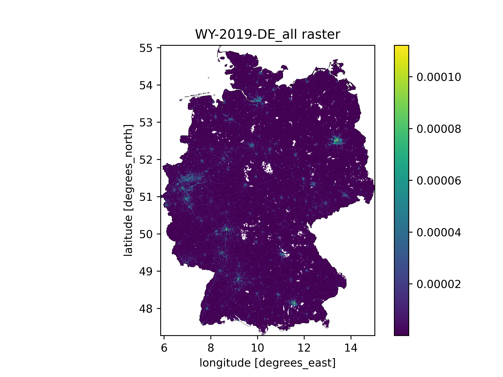
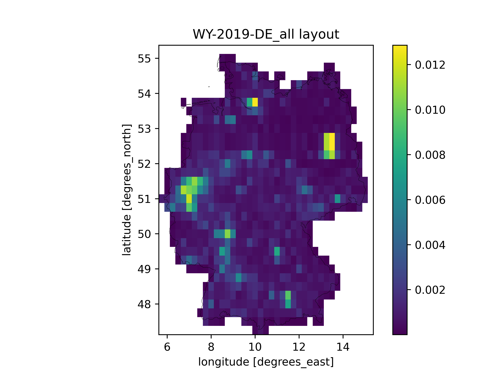

ArchetypeBuildingWeather.py
A PyPSA/atlite-based Python sub-module for processing weather data.
The aim of this sub-module is to automatically aggregate ERA5 weather data for large geographical areas described using a shapefile, a set of weights connected to the shapefile, and an optional raster data file also used for weighting. Since the Julia documenter doesn't know how to automatically handle Python docstrings, interested readers unfortunately need to look into the code itself for the technical details. However, the following sections hope to at least give you a rough idea about what the ArchetypeBuildingWeather.py sub-module does. Furthermore, the testscript.ipynb Jupyter Notebook included in this repository provides and example how the weather data aggregation works.
Input data requirements for the automatic weather data aggregation
The weather data aggregation is controlled by a few parameters in the Input data reference:
- shapefile_path: Filepath pointing to a shapefile describing the geographical shape of the building_stock in question.
- weather_start: The desired start of the weather period for the building_archetype.
- weather_end: The desired end of the weather period for the building_archetype.
- raster_weight_path: An optional filepath to weighting raster data. (See e.g. Hotmaps residential heated gross floor area density data)
While the weather_start and weather_end are more or less self-explanatory, there are a few important things to know about the shapefile and optional raster data:
- The shapefile and raster must use the WGS 84 EPSG:4326 coordinate reference system, as it is required by
PyPSA/atlitefor correctly handling ERA5 data. - The shapefile must contain an attribute called
location, with values corresponding to the location_id objects (not the location_name parameters!) for the included polygons. E.g. for my Finnish building stock data, I have aFI.shpcontaining a polygon for each municipality in Finland, with thelocationattribute containing the Finnish municipality code for each polygon. - The absolute values of the optional raster data don't matter, as the data is normalized during the processing.
High-level description of the weather data aggregation, the aggregate_weather function
As explained by the Process WeatherData structs section, if The building_archetype definition doesn't include a user-specified building_weather definition, the create_building_weather function is called to attempt to automatically fetch and aggregate the desired weather data based on The building_scope definition. Under the hood, the create_building_weather calls the aggregate_weather Python function, which could be called the main function of the ArchetypeBuildingWeather.py sub-module. The aggregate_weather function essentially performs the following steps:
- Load the shapefile from shapefile_path.
- Prepare the
cutoutforatliteusing Theprepare_cutoutfunction. - Prepare the
layoutforatliteusing Theprepare_layoutfunction. - If
save_layouts == true, plot diagnostics using Theplot_layoutfunction. - Return the output of The
process_weatherfunction.
The prepare_cutout function
The prepare_cutout function takes as input the given shapefile, weather_start and weather_end, and quite simply creates and prepares the atlite ERA5 cutout. See the atlite documentation or their Creating a Cutout with ERA5 example for more information.
The prepare_layout function
The prepare_layout function takes the given shapefile, the optional raster_path, as well as the location_id_gfa_weights produced by the ArchetypeBuildingModel.process_building_stock_scope function, and produces a layout raster for sampling the ERA5 weather data. Again, see the atlite documentation for more information. The layout produced here is essentially identical to the capacity layouts described in the documentation, except that ours is normalized so that it results into a weighted average value, instead of a cumulative value.
The location_id_gfa_weights have precedence over the optional raster_path weights. When both are used, the raster weights are normalized to match the corresponding location_id_gfa_weights, which are based on the shapefile vector GIS data. Thus, the raster_path is essentially only used to refine the distribution inside the location_id polygons of the shapefile.
The plot_layout function
If the save_layouts == true (false by default) is set, the plot_layout function is called to plot both the original raster weights, as well as the layout from the The prepare_layout function. The diagnostic figures are saved under the figs/ folder in the repository. Here are example weather data aggregation layouts for Germany as plotted by the plot_layout function, before and after matching the used polulation density raster resolution to ERA5.
 
The process_weather function
After both the cutout and the layout have been processed, the process_weather function is called to calculate the aggregated weather parameters required for the ArchetypeBuildingModel.jl. Essentially, this means calculating the following:
- Ambient temperature in [K].
- Diffuse irradiation on a horizontal surface in [W/m2].
- Direct irradiation on a horizontal surface, as well as vertical surfaces facing in the cardinal directions in [W/m2].
So ultimately, out of all this weather data processing, we're left with only seven timeseries representing the weighted average weather over the building_scope.